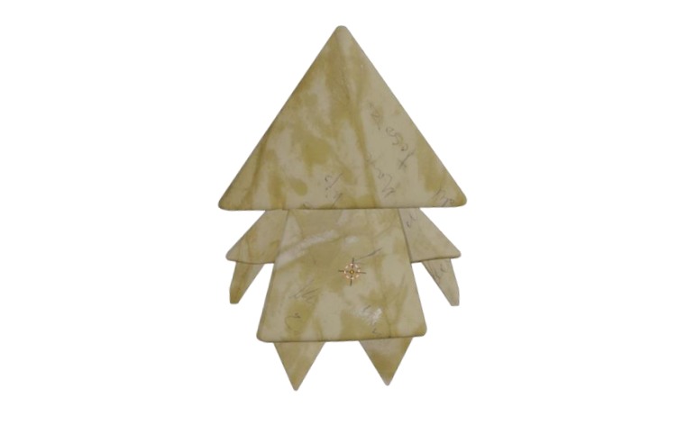

Proyecto RAIN
Videojuego de aventuras e interacción en entorno virtual
Presentación del Proyecto
RAIN es un videojuego enfocado en la exploración e interacción dentro de un entorno inmersivo. El proyecto combina una narrativa visual cuidada con la integración de elementos 3D y sistemas de juego dinámicos, ofreciendo una experiencia centrada en la ambientación y la inmersión del jugador.
Mecánicas Principales
El núcleo jugable se articula a través del control de personaje en tiempo real, resolución de puzles basados en el entorno y sistemas de interacción espacial. Las mecánicas clave incluyen:
- Control e Interacción: Respuestas fluidas de movimiento e interacción directa con elementos dinámicos del escenario.
- Sistemas de Eventos: Disparadores (triggers) que activan cambios en el entorno y avanzan el flujo de la partida.
- Ambientación Dinámica: Gestión de iluminación y efectos visuales sincronizados con el estado de la jugabilidad.
Mi Aportación al Desarrollo
En este proyecto he asumido el desarrollo de la **lógica del juego y la integración técnica**. Mis responsabilidades principales incluyeron la programación de los comportamientos del personaje, el diseño e implementación del sistema de eventos interactivos, la integración de assets 3D optimizados desde Blender y la configuración del entorno gráfico para garantizar un rendimiento fluido y estable.
Tráiler del Videojuego
Puedes ver el tráiler oficial a continuación o acceder directamente a través de este enlace a YouTube.